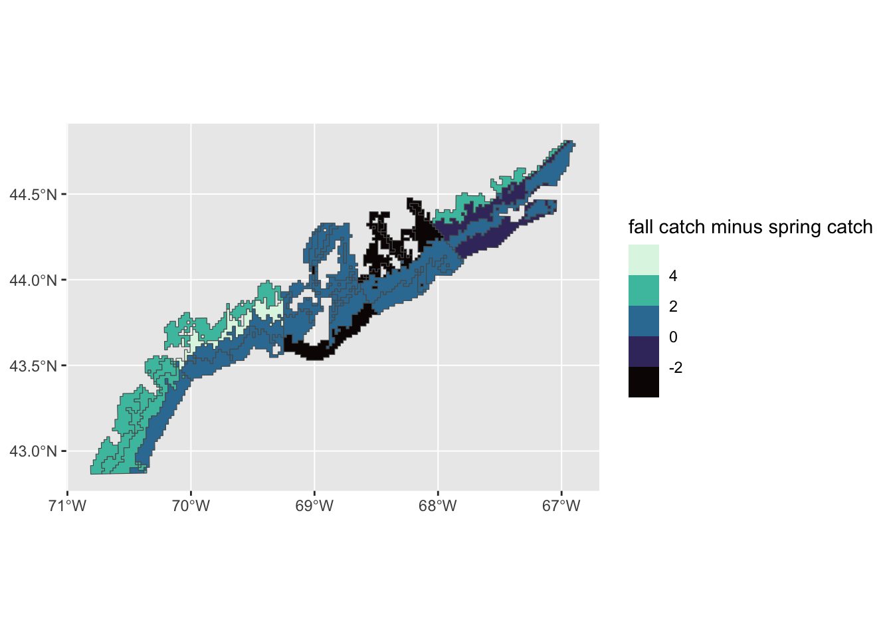
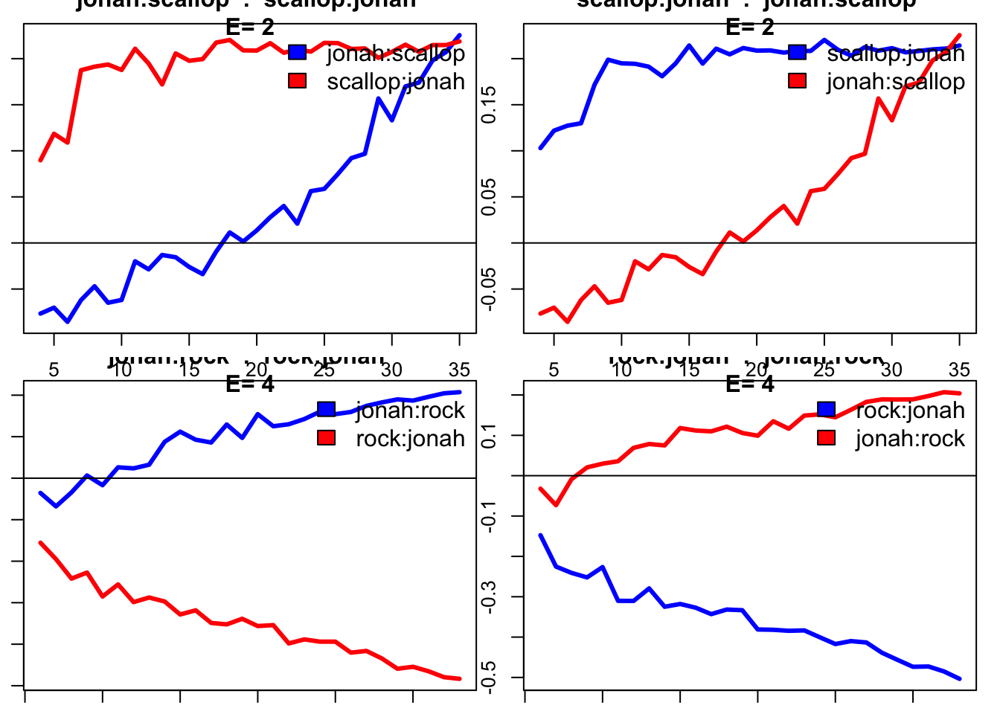
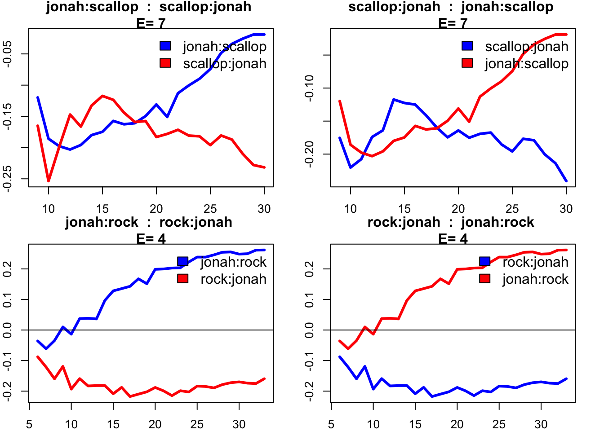
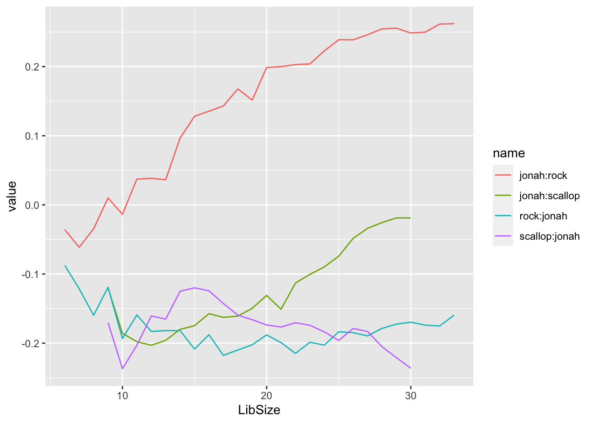
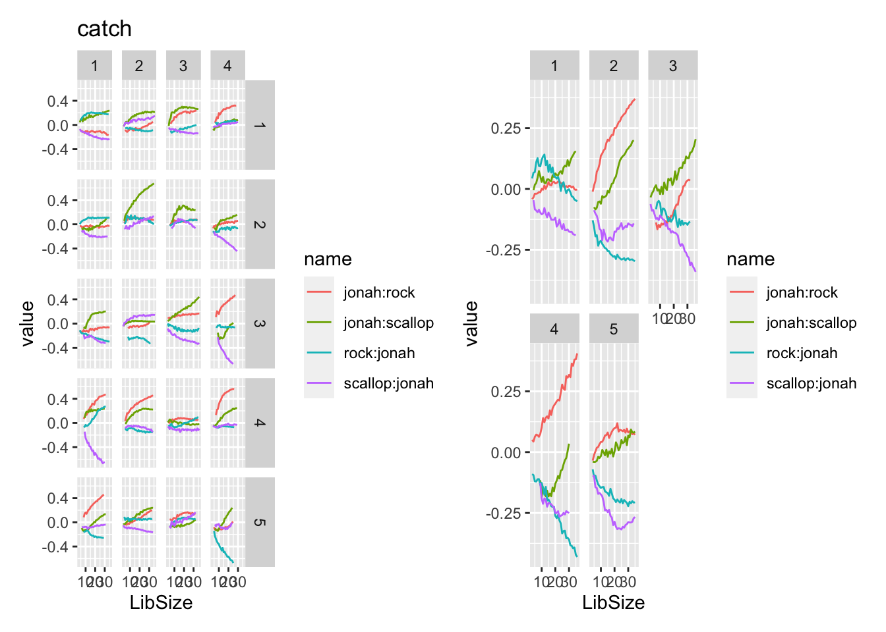
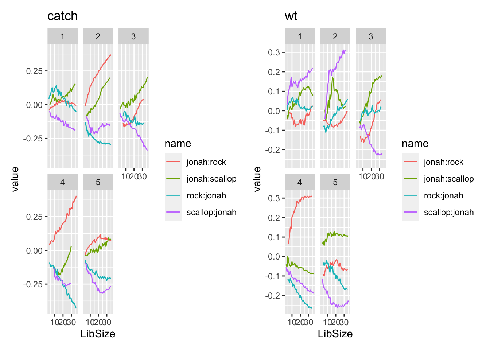
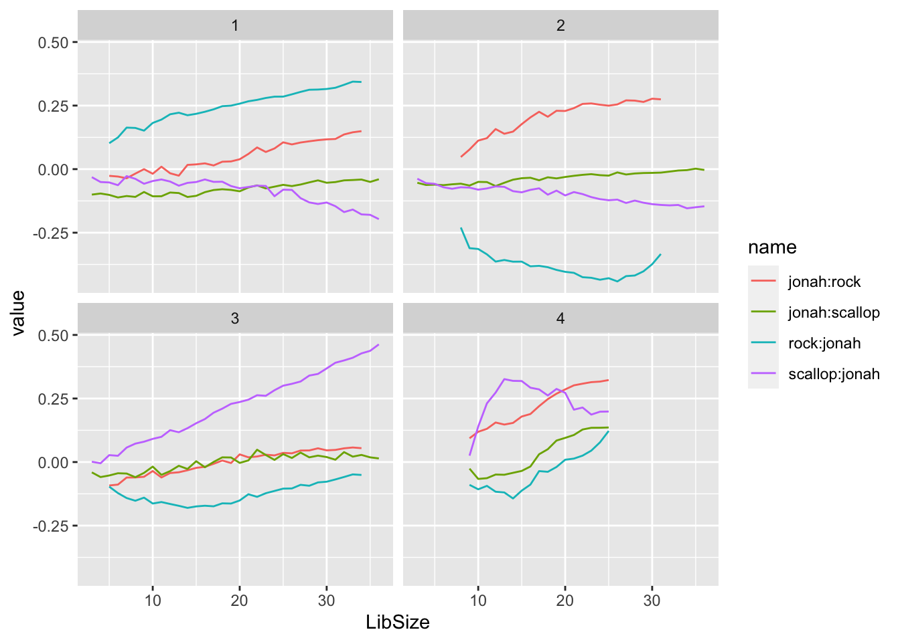

#Load packages
library(tidyverse)
library(lubridate) #date formatting
library(patchwork) #combining plots
library(viridis)
library(rEDM) #EDM
library(sf) #for spatial dataMethods - Jonah Crab
Our approach here will be to utilize the multiple spatial scales and different metrics of abundance (weight/biomass, in kg, and catch per tow) to identify recurring patterns/trends in the dynamics of Jonah crab in the Gulf of Maine. We start with univariate analysis to assess the dimensionality, nonlinearity, and predictability of the system, and to evaluate if these characteristics differ across the coastline or at different depths. If the univariate analysis indicates that the system has appropriately low-dimensional, nonlinear dynamics, we move on to exploring the potential drivers of Jonah crab abundance, specifically interspecies interactions with Atlantic rock crabs (primarily a competitor with Jonah crabs) and Atlantic sea scallops (primarily a prey species).
Load packages
Import data
df_tows<-read.csv("data/Maine_inshore_trawl/MEtows.csv") #tow data
df_s_cat<- read.csv("data/Maine_inshore_trawl/MEscallopCatch.csv") #scallop catch
df_r_cat<- read.csv("data/Maine_inshore_trawl/MErockCatch.csv") #rock crab catch
df_j_cat<- read.csv("data/Maine_inshore_trawl/MEjonahCatch.csv") #jonah crab catch
surveyGrid <-st_read("~/Downloads/lab_notebook/Maine/MaineDMR_-_Inshore_Trawl_Survey_Grid") #CRS: WGS 84/EPSG 4326Reading layer `MaineDMR_-_Inshore_Trawl_Survey_Grid' from data source
`/Users/rubykrasnow/Downloads/lab_notebook/Maine/MaineDMR_-_Inshore_Trawl_Survey_Grid'
using driver `ESRI Shapefile'
Simple feature collection with 3698 features and 9 fields
Geometry type: POLYGON
Dimension: XY
Bounding box: xmin: -70.81288 ymin: 42.86466 xmax: -66.88822 ymax: 44.81316
Geodetic CRS: WGS 84Rename and add variables to survey grid
surveyGrid <- surveyGrid %>%
mutate(Region = region_id,
Stratum = depth_stra,
GridID = grid_id, .keep="unused", .before=last_surve)
surveyGrid$area <- as.numeric(paste0(surveyGrid$Region, surveyGrid$Stratum))Define function cleanCatch and apply to the three catch data files
cleanCatch <- function(x) {
full_join(x, df_tows) %>%
arrange(Survey, Tow_Number) %>%
select(-c("Stratum", "Subsample_Weight_kg", "Subsample_Weight_kg_2", "Male_Wt_kg", "Female_Wt_kg","Date", "Surface_WaterTemp_DegC", "Surface_Salinity", "End_Latitude","End_Longitude", "Air_Temp", "Tow_Time")) %>%
mutate(Number_Caught = replace_na(Number_Caught,0),
Weight_kg = replace_na(Weight_kg,0),
Expanded_Catch = replace_na(Expanded_Catch,0),
Expanded_Weight_kg = replace_na(Expanded_Weight_kg,0)) %>%
mutate(Stratum = Depth_Stratum, Date = date(ymd_hms(Start_Date)), .keep="unused") %>%
mutate(area = as.numeric(paste0(Region, Stratum)),.before= Survey)
}
s_cat_clean_seasons <- cleanCatch(df_s_cat) %>%
mutate(Common_Name = "Scallop")
r_cat_clean_seasons <- cleanCatch(df_r_cat) %>%
mutate(Common_Name = "Rock")
j_cat_clean_seasons <- cleanCatch(df_j_cat) %>%
mutate(Common_Name = "Jonah")Reorder columns so the data frames are easier to work with
#Reorder columns
colOrder<-c("area", "Survey", "Tow_Number", "Region", "Stratum", "Expanded_Catch",
"Expanded_Weight_kg", "Date", "Common_Name", "Number_Caught", "Weight_kg",
"Start_Latitude", "Start_Longitude","Season",
"Year","Grid", "Start_Depth_fathoms", "End_Depth_fathoms",
"Bottom_WaterTemp_DegC", "Bottom_Salinity")
j_cat_clean_seasons <- j_cat_clean_seasons %>% select(all_of(colOrder))
r_cat_clean_seasons <- r_cat_clean_seasons %>% select(all_of(colOrder))
s_cat_clean_seasons <- s_cat_clean_seasons %>% select(all_of(colOrder))Define a function, summaryCatch, to summarize over tows for each area (area = region/stratum combination) and apply to all three species.
summaryCatch <- function(df) {
df %>% group_by(area, Season, Year, Region, Stratum) %>%
summarise(avgCatch = mean(Expanded_Catch),
avgWt = mean(Expanded_Weight_kg))
}
#computes averages for each study area (area = region-stratum combination)
j_cat_sum_seasons <- summaryCatch(j_cat_clean_seasons)
r_cat_sum_seasons <- summaryCatch(r_cat_clean_seasons)
s_cat_sum_seasons <- summaryCatch(s_cat_clean_seasons)Combine the three separate data frames
catch_seasons <- s_cat_sum_seasons %>% left_join(j_cat_sum_seasons, by=c("area", "Season", "Region", "Stratum", "Year"), suffix = c("_s", "_j"))
catch_seasons <- catch_seasons %>% left_join(r_cat_sum_seasons, by=c("area", "Season", "Region", "Stratum", "Year")) %>%
mutate(avgCatch_r = avgCatch,avgWt_r = avgWt, .keep="unused")Now make it “tidy” and convert area, Species, Season, Region, and Stratum to factors.
catchTidy_seasons <- pivot_longer(catch_seasons,
cols = 6:ncol(catch_seasons)) %>%
mutate(Type = case_when(
startsWith(name, "avgCatch_") ~"catch",
startsWith(name,"avgWt_") ~"wt")) %>%
mutate(Species = case_when(
endsWith(name, "s") ~"scallop",
endsWith(name, "r") ~"rock",
endsWith(name, "j") ~"jonah"))
catchTidy_seasons <- catchTidy_seasons %>%
mutate(area = as.factor(area), Species = as.factor(Species),Season = as.factor(Season),Region = as.factor(Region), Stratum = as.factor(Stratum)) %>%
select(-name)The complete function will turn implicit missing values into explicit ones. In this case, Stratum 4 was not surveyed until 2003, so this will add in the appropriate NA values for 2000-2002. We do this for both the tidy version and the original/long version. Turning Fall/Spring and Year into specific dates makes for easier plotting, although they may be slightly different than the original dates that were associated with individual tows.
catch_complete <- complete(data=catch_seasons %>% ungroup(), Region, Stratum, Season, Year) %>%
mutate(area = paste(Region, Stratum)) %>%
mutate(date=paste(Year, case_when(Season== "Fall" ~ "-11-01", Season =="Spring" ~"-05-01"), sep = ""), .before=Region) %>%
filter(date != "2000-05-01")
catchTidy_complete<- complete(data = catchTidy_seasons %>% ungroup() %>% filter(Type=="catch"), Region, Stratum, Season, Year) %>%
mutate(area = as.numeric(paste0(Region, Stratum))) %>%
mutate(date=paste(Year, case_when(Season== "Fall" ~ "-11-01", Season =="Spring" ~"-05-01"), sep = ""), .before=Region) %>% filter(date != "2000-05-01")Parse the date column
catch_complete <- catch_complete %>% mutate(date = lubridate::ymd(date))
catchTidy_complete <- catchTidy_complete %>% mutate(date = lubridate::ymd(date))First, we look at trends in overall abundance:
#line graph of abundance over time by season, no spatial distinction
ggplot(data = catchTidy_seasons %>% filter(Type=="catch", Species=="jonah") %>% group_by(Year, Season) %>% summarise(value = mean(value)))+geom_line(aes(x=Year, y=value))+facet_wrap(~Season)+theme_classic()+labs(y="Abundance (catch/tow)")For comparison, we also plot the catch time series of Jonah crabs alongside rock crabs, both overall and separated by season:
ggplot(data = catchTidy_complete %>% filter(Type == "catch", Species != "scallop") %>% group_by(date, Species) %>%
summarise(avg = mean(value, na.rm = TRUE)), aes(x=date, y=avg))+geom_line()+facet_wrap(~Species)+labs(y="catch")+theme_classic()#a lot more variation in the jonah crabs
ggplot(data = catchTidy_complete %>% filter(Type == "catch", Species != "scallop") %>% group_by(Year, Season, Species) %>%
summarise(avg = mean(value, na.rm = TRUE)), aes(x=Year, y=avg))+geom_line()+facet_grid(Season~Species)+labs(y="catch")+theme_classic()#a lot more variation in the jonah crabsFluctuations in catch of rock crabs appear smaller and more regular than for Jonah crabs.
Now we’ll incorporate the spatial aspect of the data. We start by looking at abundance of Jonah and rock crabs averaged from 2000-2022.
regionsGrid_orig <- surveyGrid %>% group_by(area) %>% summarise(num = n_distinct(GridID))
regionsGrid <- left_join(regionsGrid_orig, catchTidy_complete %>% filter(Type=="catch",) %>% group_by(area, date, Species) %>% summarise(avg = mean(value)))
ggplot(data=regionsGrid %>% filter(Species != "scallop") %>% group_by(Species, area) %>% summarise(avg = mean(avg)))+geom_sf(aes(fill=avg))+facet_wrap(~Species)+scale_fill_viridis_c()We can also separate by seasons:
regionsGrid_seasons <- left_join(regionsGrid_orig, catchTidy_complete %>% filter(Type=="catch",) %>% group_by(area, date, Species, Season) %>% summarise(avg = mean(value)))
#Jonah and rock crabs
ggplot(data=regionsGrid_seasons %>% filter(Species != "scallop") %>% group_by(area, Species, Season) %>% summarize(avg = mean(avg, na.rm=TRUE)))+geom_sf(aes(fill=avg))+facet_grid(Season~Species)+scale_fill_viridis_c(option = "F", name="avg catch")# Jonah crab only
#ggplot(data=regionsGrid_seasons %>% filter(Species == "jonah") %>% group_by(area, Season) %>% summarize(avg = mean(avg)))+geom_sf(aes(fill=avg))+facet_wrap(~Season)+scale_fill_viridis_c()We look at seasonal movement by year:
jonahCatch <- left_join(regionsGrid_orig, catchTidy_complete %>% filter(Species=="jonah"))
jonahCatchFall <- jonahCatch %>% filter(Season == "Fall", Type == "catch") %>% rename(valueFall = value) %>% select(-c("Season", "date"))
jonahCatchSpring <- jonahCatch %>% filter(Season == "Spring", Type == "catch") %>% st_drop_geometry() %>% rename(valueSpring = value) %>% select(-c("Season", "date"))
jonahCatchDiff <- left_join(jonahCatchFall, jonahCatchSpring) %>% arrange(area, Year)
jonahCatchDiff <- jonahCatchDiff %>% mutate(diff = valueFall -valueSpring)
#difference fall vs spring by area
ggplot(data = jonahCatchDiff %>% group_by(area) %>% summarise(avg = mean(diff, na.rm=TRUE)))+geom_sf(aes(fill=avg))+
scale_fill_viridis_b(name="fall catch minus spring catch", option="G")
#difference fall vs spring by year and area
ggplot(data = jonahCatchDiff %>% filter(Year != 2000 & Year != 2020))+geom_sf(aes(fill=diff))+
scale_fill_viridis_b(name="fall catch minus spring catch")+facet_wrap(~Year)seasonalDiff_by_area<- jonahCatchDiff %>% st_drop_geometry() %>% group_by(area) %>% summarise(avg = mean(diff, na.rm=TRUE), sd = sd(diff, na.rm=TRUE))
seasonalDiff_by_area# A tibble: 20 × 3
area avg sd
<dbl> <dbl> <dbl>
1 11 3.04 7.69
2 12 3.39 4.20
3 13 2.24 4.50
4 14 0.0375 1.90
5 21 2.69 4.08
6 22 4.55 8.68
7 23 1.53 10.7
8 24 1.14 3.21
9 31 0.816 2.17
10 32 0.119 2.01
11 33 0.362 7.83
12 34 -2.62 4.39
13 41 -2.28 5.65
14 42 -3.17 16.4
15 43 1.07 9.93
16 44 1.26 11.9
17 51 3.25 10.8
18 52 -1.87 16.1
19 53 0.829 17.0
20 54 -0.326 7.91For EDM, we want the time series to be as long as possible, so instead of considering seasons separately, we utilize the entire time series but take second-differences (i.e., x(t) = x(t)-x(t-2)) to remove the seasonal effect. Unfortunately, because of COVID, we are also going to get rid of the data after the missed Spring 2020 survey, since we can’t take second-differences with NA values and we want to avoid linear interpolation that may obscure nonlinear system dynamics.
lag2 <- function(x) {
x_lagged <- (x - lag(x, 2))
return(x_lagged)
} # test with lag2(c(1, 3, 3, 5, 6, 9, 12))
catch_complete_diff <- catch_complete %>% arrange(date) %>% group_by(area) %>%
mutate(across(where(is.double) & !date, lag2)) %>%
arrange(area) %>%
filter(date != "2000-11-01" & date != "2001-05-01") %>% filter(date < as.Date("2020-05-01"))
#Tidy it up
complete_tidy_diff <- pivot_longer(catch_complete_diff,cols = 7:ncol(catch_complete)) %>%
mutate(Type = case_when(
startsWith(name, "avgCatch_") ~"catch",
startsWith(name,"avgWt_") ~"wt",
startsWith(name,"avgLogWt") ~"logWt",
startsWith(name,"avgLogCatch") ~"logCatch")) %>%
mutate(Species = case_when(
endsWith(name, "s") ~"scallop",
endsWith(name, "r") ~"rock",
endsWith(name, "j") ~"jonah")) %>%
mutate(area = as.factor(area), Species = as.factor(Species),
Region = as.factor(Region), Type = as.factor(Type),
Stratum = as.factor(Stratum)) %>%
select(-name)Let’s look at the differenced data:
#All areas on one graph, split by species
ggplot(data = complete_tidy_diff %>%
filter(Type == "catch", Species != "scallop"), aes(x=date, y=value, color=area))+geom_line()+facet_wrap(~Species) +labs(y="2nd-differenced catch", x="Year")#Averaged across areas, split by species
ggplot(data = complete_tidy_diff %>% filter(Type == "catch", Species != "scallop") %>% group_by(date, Species) %>%
summarise(avg = mean(value, na.rm = TRUE)), aes(x=date, y=avg))+geom_line()+facet_wrap(~Species)+theme_classic()+labs(y="2nd-differenced catch", x="Year")#Colored by species, split by area
ggplot(data = complete_tidy_diff %>% filter(Type == "catch", Species != "scallop"), aes(x=date, y=value, color=Species))+geom_line()+facet_grid(Region~Stratum)+labs(x="Depth stratum", y="Region")+theme(axis.title.x = element_text(margin = margin(t = 10, r = 0, b = 0, l = 0)))As we noted earlier, there appears to be much more variation in Jonah crab abundance compared to the rock crabs, although not in every area.
EDM - dimensionality and nonlinearity (aggregate)
We start our EDM analyses by looking at the dynamics of the system in aggregate, averaged across all areas. First we look at embedding dimension using Simplex projection with leave-one-out cross-validation:
EmbedDimension(dataFrame=complete_tidy_diff %>% filter(Species=="jonah", Type=="catch") %>% group_by(date) %>%
summarise(avg = mean(value, na.rm = TRUE)) %>%
ungroup() %>% select(date, avg), columns ="avg", target="avg", lib = "1 37", pred="1 37") E rho
1 1 -0.05596228
2 2 0.08077393
3 3 -0.16863421
4 4 -0.16647178
5 5 -0.31101223
6 6 -0.24214677
7 7 -0.29832851
8 8 -0.48913659
9 9 -0.30460740
10 10 -0.46544135EmbedDimension(dataFrame=complete_tidy_diff %>% filter(Species=="jonah", Type=="wt") %>% group_by(date) %>%
summarise(avg = mean(value, na.rm = TRUE)) %>%
ungroup() %>% select(date, avg), columns ="avg", target="avg", lib = "1 37", pred="1 37") E rho
1 1 0.01170876
2 2 0.32701089
3 3 -0.07984101
4 4 -0.14711141
5 5 -0.35237277
6 6 -0.31118525
7 7 -0.41617082
8 8 -0.51337192
9 9 -0.40191052
10 10 -0.44620445The optimal embedding dimension is the one with the highest predictive skill. For both catch and weight, E=2 has the highest rho value, although neither measure of abundance shows particularly high rho values.
We will also use S-mapping to evaluate nonlinearity, with E=2:
PredictNonlinear(dataFrame=complete_tidy_diff %>% filter(Species=="jonah", Type=="catch") %>% group_by(date) %>%
summarise(avg = mean(value, na.rm = TRUE)) %>%
ungroup() %>% select(date, avg), columns ="avg", target="avg", lib = "1 37", pred="1 37", E=2) Theta rho
1 0.01 0.3989329
2 0.10 0.4221316
3 0.30 0.4623918
4 0.50 0.4839824
5 0.75 0.4887806
6 1.00 0.4795676
7 1.50 0.4501698
8 2.00 0.4218846
9 3.00 0.3749288
10 4.00 0.3397510
11 5.00 0.3111837
12 6.00 0.2830714
13 7.00 0.2520656
14 8.00 0.2180123
15 9.00 0.1829936PredictNonlinear(dataFrame=complete_tidy_diff %>% filter(Species=="jonah", Type=="wt") %>% group_by(date) %>%
summarise(avg = mean(value, na.rm = TRUE)) %>%
ungroup() %>% select(date, avg), columns ="avg", target="avg", lib = "1 37", pred="1 37", E=2) Theta rho
1 0.01 0.3904568
2 0.10 0.4208138
3 0.30 0.4800092
4 0.50 0.5171723
5 0.75 0.5311135
6 1.00 0.5242665
7 1.50 0.4966586
8 2.00 0.4711912
9 3.00 0.4284449
10 4.00 0.3915121
11 5.00 0.3579365
12 6.00 0.3265041
13 7.00 0.2954545
14 8.00 0.2630482
15 9.00 0.2297665We can see that both catch and weight are better represented by a nonlinear model (theta >0) than a linear one. In addition, the predictive skill of the s-map projections is higher than the Simplex models.
Now we want to see how these characteristics change at different spatial scales. We will first define some useful functions to more efficiently repeat the previous tests:
############ Find E and rho - vector input -------------------------------------------------
findE_v <- function(v, maxE = 7) {
lib_vec <- paste(1, length(v))
indices <- c(1:length(v))
df <- data.frame(indices,v)
colnames(df)<-c("index", "value")
rho_E<- EmbedDimension(dataFrame = df, lib = lib_vec, pred = lib_vec, columns = "value",target = "value", maxE = maxE)
E_out<-rho_E[which.max(rho_E$rho),"E"][1]
return(E_out)
}
findErho_v <- function(v) {
lib_vec <- paste(1, length(v))
indices <- c(1:length(v))
df <- data.frame(indices,v)
colnames(df)<-c("index", "value")
rho_E<- EmbedDimension(dataFrame = df, lib = lib_vec, pred = lib_vec, columns = "value",target = "value", maxE = 7)
rho_out<-rho_E[which.max(rho_E$rho),"rho"][1]
return(rho_out)
}
############ Find Theta and rho - vector input -------------------------------------------------
findTheta_v <- function(v, E) {
lib_vec <- paste(1, length(v))
indices <- c(1:length(v))
df <- data.frame(indices,v)
colnames(df)<-c("index", "value")
rho_Theta<- PredictNonlinear(dataFrame = df, lib = lib_vec, pred = lib_vec, columns = "value",target = "value", E=E)
Theta_out<-rho_Theta[which.max(rho_Theta$rho),"Theta"][1]
return(Theta_out)
}
findThetaRho_v <- function(v, E) {
lib_vec <- paste(1, length(v))
indices <- c(1:length(v))
df <- data.frame(indices,v)
colnames(df)<-c("index", "value")
rho_Theta<- PredictNonlinear(dataFrame = df, lib = lib_vec, pred = lib_vec, columns = "value",target = "value", E=E)
Rho_out<-rho_Theta[which.max(rho_Theta$rho),"rho"][1]
return(Rho_out)
}
############ findSpeciesE & findSpeciesErho -------------------------------------------------------
#returns a tibble with the optimal embedding dimension for time series from each region/stratum combination
#Find species E
findSpeciesE <- function(df, season=NULL, type) {
if (is.null(season)) {
df_out <- df %>%
filter(Type == type) %>%
group_by(Region, Stratum) %>%
select(Year, value) %>%
summarise(E_opt = findE_v(value)) %>%
pivot_wider(names_from = Stratum, values_from = E_opt) %>%
ungroup() %>%
select(-Region)
}
else {
df_out <- df %>%
filter(Type == type, Season == season) %>%
group_by(Region, Stratum) %>%
select(Year, value) %>%
summarise(E_opt = findE_v(value)) %>%
pivot_wider(names_from = Stratum, values_from = E_opt) %>%
ungroup() %>%
select(-Region) }
return(df_out)
}
#Find predictive skill for Simplex with optimal E
findSpeciesErho <- function(df, season=NULL, type) {
if (is.null(season)) {
df_out <- df %>%
filter(Type == type) %>%
group_by(Region, Stratum) %>%
select(Year, value) %>%
summarise(E_opt_rho = findErho_v(value)) %>%
pivot_wider(names_from = Stratum, values_from = E_opt_rho) %>%
ungroup() %>%
select(-Region) }
else {
df_out <- df %>%
filter(Type == type, Season == season) %>%
group_by(Region, Stratum) %>%
select(Year, value) %>%
summarise(E_opt_rho = findErho_v(value)) %>%
pivot_wider(names_from = Stratum, values_from = E_opt_rho) %>%
ungroup() %>%
select(-Region)
}
return(df_out)
}
############ findSpeciesTheta -------------------------------------------------------
findSpeciesTheta <- function(df, season=NULL, type) {
df_E <- findSpeciesE(df=df, season=season, type=type)
findE <- function (reg, strat) {
E <- as.integer(df_E %>% slice(reg) %>% pull(strat))
return(E)
}
if (is.null(season)) {
df_out <- df %>%
filter(Type == type) %>%
mutate(E_row = as.integer(Region), E_col = as.integer(Stratum)) %>%
rowwise() %>%
mutate(E = findE(reg=E_row, strat=E_col)) %>%
group_by(Region, Stratum) %>%
summarise(Theta_opt = findTheta_v(value, E[1])) %>%
pivot_wider(names_from = Stratum, values_from = Theta_opt) %>%
ungroup() %>%
select(-Region) }
else {
df_out <- df %>%
filter(Type == type, Season==season) %>%
mutate(E_row = as.integer(Region), E_col = as.integer(Stratum)) %>%
rowwise() %>%
mutate(E = findE(reg=E_row, strat=E_col)) %>%
group_by(Region, Stratum) %>%
summarise(Theta_opt = findTheta_v(value, E[1])) %>%
pivot_wider(names_from = Stratum, values_from = Theta_opt) %>%
ungroup() %>%
select(-Region) }
return(df_out)
}
#Find predictive skill for s-map with optimal E and theta
findSpeciesTheta_rho <- function(df, season=NULL, type) {
df_E <- findSpeciesE(df=df, season=season, type=type)
findE <- function (reg, strat) {
E <- as.integer(df_E %>% slice(reg) %>% pull(strat))
return(E)
}
if (is.null(season)) {
df_out <- df %>%
filter(Type == type) %>%
mutate(E_row = as.integer(Region), E_col = as.integer(Stratum)) %>%
rowwise() %>%
mutate(E = findE(reg=E_row, strat=E_col)) %>%
group_by(Region, Stratum) %>%
summarise(Theta_opt = findThetaRho_v(value, E[1])) %>%
pivot_wider(names_from = Stratum, values_from = Theta_opt) %>%
ungroup() %>%
select(-Region) }
else {
df_out <- df %>%
filter(Type == type, Season==season) %>%
mutate(E_row = as.integer(Region), E_col = as.integer(Stratum)) %>%
rowwise() %>%
mutate(E = findE(reg=E_row, strat=E_col)) %>%
group_by(Region, Stratum) %>%
summarise(Theta_opt = findThetaRho_v(value, E[1])) %>%
pivot_wider(names_from = Stratum, values_from = Theta_opt) %>%
ungroup() %>%
select(-Region) }
return(df_out)
}EDM - dimensionality and nonlinearity (by area)
Now we apply the functions to the catch data:
jonah_catchE <- findSpeciesE(complete_tidy_diff %>% filter(Species=="jonah") %>% na.omit(), type="catch") jonah_catchE_rho<- findSpeciesErho(complete_tidy_diff %>% filter(Species=="jonah") %>% na.omit(), type="catch")%>% round(digits=3)jonah_catch_theta<- findSpeciesTheta(complete_tidy_diff %>% filter(Species=="jonah") %>% na.omit(), type="catch")jonah_catch_theta_rho<- findSpeciesTheta_rho(complete_tidy_diff %>% filter(Species=="jonah") %>% na.omit(), type="catch")And repeat for the weight data:
jonah_wtE <- findSpeciesE(complete_tidy_diff %>% filter(Species=="jonah") %>% na.omit(), type="wt") jonah_wtE_rho<- findSpeciesErho(complete_tidy_diff %>% filter(Species=="jonah") %>% na.omit(), type="wt")%>% round(digits=3)jonah_wt_theta<- findSpeciesTheta(complete_tidy_diff %>% filter(Species=="jonah") %>% na.omit(), type="wt")jonah_wt_theta_rho<- findSpeciesTheta_rho(complete_tidy_diff %>% filter(Species=="jonah") %>% na.omit(), type="wt")Let’s take a look:
jonah_catchE# A tibble: 5 × 4
`1` `2` `3` `4`
<dbl> <dbl> <dbl> <dbl>
1 2 2 2 1
2 2 2 2 1
3 3 5 5 6
4 2 6 2 3
5 4 2 4 2jonah_catchE_rho# A tibble: 5 × 4
`1` `2` `3` `4`
<dbl> <dbl> <dbl> <dbl>
1 0.714 0.508 0.239 0.202
2 0.573 0.382 0.464 -0.003
3 0.385 0.344 0.274 0.572
4 0.233 0.146 0.525 0.25
5 0.045 0.45 0.248 0.154jonah_catch_theta# A tibble: 5 × 4
`1` `2` `3` `4`
<dbl> <dbl> <dbl> <dbl>
1 2 1 7 8
2 7 1.5 1 9
3 1 1 9 3
4 9 9 4 3
5 1 2 0.3 0.5jonah_catch_theta_rho# A tibble: 5 × 4
`1` `2` `3` `4`
<dbl> <dbl> <dbl> <dbl>
1 0.862 0.592 0.658 0.172
2 0.600 0.801 0.749 0.140
3 0.533 0.528 0.494 0.588
4 0.454 0.441 0.456 0.419
5 0.0915 0.533 0.378 0.742jonah_wtE# A tibble: 5 × 4
`1` `2` `3` `4`
<dbl> <dbl> <dbl> <dbl>
1 2 3 1 2
2 3 2 2 1
3 2 2 2 3
4 1 6 2 2
5 6 2 6 3jonah_wtE_rho# A tibble: 5 × 4
`1` `2` `3` `4`
<dbl> <dbl> <dbl> <dbl>
1 0.707 0.227 0.16 0.193
2 0.616 0.41 0.546 0.03
3 0.377 0.411 0.216 0.512
4 -0.07 0.091 0.369 0.174
5 0.178 0.645 0.271 0.43 jonah_wt_theta# A tibble: 5 × 4
`1` `2` `3` `4`
<dbl> <dbl> <dbl> <dbl>
1 2 0.3 9 9
2 1 1.5 1 9
3 0.01 1 0.3 9
4 0.01 9 0.1 0.75
5 2 5 0.01 9 jonah_wt_theta_rho# A tibble: 5 × 4
`1` `2` `3` `4`
<dbl> <dbl> <dbl> <dbl>
1 0.869 0.354 0.139 0.218
2 0.747 0.848 0.694 -0.0414
3 0.605 0.626 0.435 0.576
4 -0.0843 0.300 0.420 0.522
5 0.398 0.704 0.352 0.662 The results for catch and weight are similar, but not identical. There is also clear spatial heterogeneity: some areas have an optimal embedding dimension of only 1, while others reach 6; some areas display essentially linear dynamics, with theta=0.01, but most areas appear to be highly nonlinear. The predictive skill also ranges widely. For example, Region 2, Stratum 4 appears especially low (catch s-map is 0.14, weight Simplex is 0.03, and catch Simplex and weight s-map have negative rho), whereas Region 1, Stratum 1 appears to be among the most predictable (all 4 models have rho >0.7). We note that the predictability for individual areas is generally higher than the aggregate results we computed earlier.
The lowered-number regions and strata (further south and closer inshore, respectively) appear to be generally more predictable than the outer strata and more northern regions. This seems reminiscent of the geographical area (in square miles) and number of tows allocated to each region/stratum combination. Let’s test this by first creating data frames with the numbers from the ME-NH Inshore Trawl Survey protocols and procedures manual.
sq_miles <- data.frame(c(253.27, 279.63, 259.62, 205.3, 138.54), c(214.22, 191.23, 262.9, 206.12, 220.49), c(227.35, 211.66, 280.03, 310.49, 365.04), c(225.65, 263.49, 183.69, 170.72, 196.11))
colnames(sq_miles)<- colnames(jonah_catchE)
tows_per_area <- data.frame(c(6, 7, 6, 5, 4), c(6, 5, 7, 5, 6), c(6, 6, 7, 8, 9), c(5, 5, 4, 4, 4))
colnames(tows_per_area)<- colnames(jonah_catchE)
sq_miles_v <- c(as.matrix(sq_miles))
tows_v <- c(as.matrix(tows_per_area))
jonah_catchE_v <- c(as.matrix(jonah_catchE))
jonah_catchE_rho_v <- c(as.matrix(jonah_catchE_rho))
jonah_catch_theta_v <- c(as.matrix(jonah_catch_theta))
jonah_catch_theta_rho_v <- c(as.matrix(jonah_catch_theta_rho))
jonah_wtE_v <- c(as.matrix(jonah_wtE))
jonah_wtE_rho_v <- c(as.matrix(jonah_wtE_rho))
jonah_wt_theta_v <- c(as.matrix(jonah_wt_theta))
jonah_wt_theta_rho_v <- c(as.matrix(jonah_wt_theta_rho))
corDf <- data.frame(sq_miles_v, tows_v, jonah_catchE_v, jonah_catchE_rho_v, jonah_catch_theta_v, jonah_catch_theta_rho_v, jonah_wtE_v, jonah_wtE_rho_v, jonah_wt_theta_v, jonah_wt_theta_rho_v)
areaList <- c(11, 12, 13, 14, 21, 22, 23, 24, 31, 32, 33, 34, 41, 42, 43, 44, 51, 52, 53, 54)
library(corrplot)
corrplot(cor(corDf), method = "circle", order = 'hclust', type="lower", diag=FALSE)
testRes = cor.mtest(corDf, conf.level = 0.95, method="spearman")
corrplot(cor(corDf), method = "circle", order = 'hclust', type="lower", diag=FALSE, p.mat = testRes$p, sig.level = c(0.001, 0.01, 0.05), pch.cex = 0.9,
insig = 'label_sig', pch.col = 'grey20')Key takeaways: (1) Weight E and catch E are positively correlated, as are weight theta and catch theta (2) Areas that were highly predictable using Simplex are more likely to be highly predictable using s-mapping (3) Within an abundance metric (catch or weight), the predictability of a system is not significantly correlated with its complexity (dimensionality) or linearity (4) The size of an area is not significantly correlated (using Spearman’s method) with any of the other metrics besides number of tows, which is to be expected because tows were specifically allocated to ensure even density in all areas. Number of tows per area appeared correlated with Simplex rho for catch data (positive correlation) and theta for weight data (negative correlation), but the strength of these correlations was relatively low, and it is likely that this is a case of statistical significance without practical/biological significance.
We will also look at these results when we average across regions or strata. # EDM dimensionality & nonlinearity - by region/stratum First, we’ll define a function that takes in the name of a group and returns EDM stats on a data frame grouped appropriately:
findSpeciesGroups_both<- function(df, species, type, g) {
df_out <- df %>% na.omit() %>%
filter(Type == type, Species == species) %>%
group_by(!!sym(g), date) %>%
summarise(avg = mean(value)) %>%
group_by(!!sym(g)) %>%
summarise(E_opt = findE_v(avg),
rho_E = findErho_v(avg),
Theta = findTheta_v(avg, E_opt),
rho_theta = findThetaRho_v(avg, E_opt))
return(df_out)
}Now we apply to the catch and weight data, looking at regional differences:
jonah_catch_regions_stats<- findSpeciesGroups_both(complete_tidy_diff, type="catch", g="Region", species="jonah")jonah_wt_regions_stats <- findSpeciesGroups_both(complete_tidy_diff, type="wt", g="Region", species="jonah")jonah_catch_regions_stats# A tibble: 5 × 5
Region E_opt rho_E Theta rho_theta
<fct> <dbl> <dbl> <dbl> <dbl>
1 1 2 0.156 9 0.751
2 2 2 0.121 2 0.679
3 3 4 0.103 0.3 0.213
4 4 2 0.0898 1.5 0.101
5 5 3 0.422 0.5 0.288jonah_wt_regions_stats# A tibble: 5 × 5
Region E_opt rho_E Theta rho_theta
<fct> <dbl> <dbl> <dbl> <dbl>
1 1 2 0.240 9 0.863
2 2 2 0.249 2 0.695
3 3 2 0.323 9 0.474
4 4 1 -0.0667 9 0.206
5 5 3 0.277 9 0.238Dimensionality appears relatively consistent between regions, but predictability and nonlinearity appear to vary widely. As when we looked at individual areas earlier, the lower-numbered regions (further south) seem more predictable than the more northern regions when modeled with the appropriate nonlinear parameter (i.e., s-map with optimal theta). Is there a negative correlation between region and s-map predictability?
We use Spearman’s method rather than the default Pearson’s because Region is an ordinal variable and Pearson’s requires at least interval data.
#Catch - s-map predictive skill
cor.test(jonah_catch_regions_stats$rho_theta, as.numeric(jonah_catch_regions_stats$Region), method = "spearman", alternative = "less")
Spearman's rank correlation rho
data: jonah_catch_regions_stats$rho_theta and as.numeric(jonah_catch_regions_stats$Region)
S = 34, p-value = 0.1167
alternative hypothesis: true rho is less than 0
sample estimates:
rho
-0.7 # rho = -0.7, p=0.117
#Catch - nonlinearity
cor.test(jonah_catch_regions_stats$Theta, as.numeric(jonah_catch_regions_stats$Region), method = "spearman", alternative = "less")
Spearman's rank correlation rho
data: jonah_catch_regions_stats$Theta and as.numeric(jonah_catch_regions_stats$Region)
S = 34, p-value = 0.1167
alternative hypothesis: true rho is less than 0
sample estimates:
rho
-0.7 # rho = -0.7, p=0.117
#Weight - s-map predictive skill
cor.test(jonah_wt_regions_stats$rho_theta, as.numeric(jonah_wt_regions_stats$Region), method = "spearman", alternative = "less")
Spearman's rank correlation rho
data: jonah_wt_regions_stats$rho_theta and as.numeric(jonah_wt_regions_stats$Region)
S = 38, p-value = 0.04167
alternative hypothesis: true rho is less than 0
sample estimates:
rho
-0.9 # rho = -0.9, p=0.042
#Catch - show corr coefficients
corrplot(cor(data.frame(jonah_catch_regions_stats %>% mutate(Region = as.integer(Region))), method="spearman"), method="number")# Catch - label significant correlations
corrplot(cor(data.frame(jonah_catch_regions_stats %>% mutate(Region = as.integer(Region)))), p.mat =
cor.mtest(jonah_catch_regions_stats %>% mutate(Region = as.integer(Region)), method="spearman", alternative="less")$p, insig = 'label_sig')#Weight - show corr coefficients
corrplot(cor(data.frame(jonah_wt_regions_stats %>% mutate(Region = as.integer(Region))), method="spearman"), method="number")# Weight - label significant correlations
corrplot(cor(data.frame(jonah_wt_regions_stats %>% mutate(Region = as.integer(Region)))), p.mat =
cor.mtest(jonah_wt_regions_stats %>% mutate(Region = as.integer(Region)), method="spearman", alternative="less")$p, insig = 'label_sig')#both weight and catch, to increase sample size
corrplot(cor(data.frame(rbind(jonah_wt_regions_stats, jonah_catch_regions_stats) %>% mutate(Region = as.integer(Region))), method="spearman"), method="number")corrplot(cor(data.frame(rbind(jonah_wt_regions_stats, jonah_catch_regions_stats) %>% mutate(Region = as.integer(Region)))), p.mat =
cor.mtest(rbind(jonah_wt_regions_stats, jonah_catch_regions_stats) %>% mutate(Region = as.integer(Region)), method="spearman", alternative="less")$p, insig = 'label_sig')S-map predictability is indeed strongly negatively correlated with region. Although the combined correlation plot also shows a significant negative correlation between E and theta, this is only driven by the catch data and is not present in the weight data. The only clear strong association present in both sets of data is the negative relationship between region and nonlinear predictive skill.
On to strata:
jonah_catch_strat_stats<- findSpeciesGroups_both(complete_tidy_diff, type="catch", g="Stratum", species="jonah")jonah_wt_strat_stats <- findSpeciesGroups_both(complete_tidy_diff, type="wt", g="Stratum", species="jonah")jonah_catch_strat_stats# A tibble: 4 × 5
Stratum E_opt rho_E Theta rho_theta
<fct> <dbl> <dbl> <dbl> <dbl>
1 1 2 0.225 1.5 0.479
2 2 3 0.160 9 0.201
3 3 2 0.341 1.5 0.563
4 4 2 0.160 1 0.692jonah_wt_strat_stats# A tibble: 4 × 5
Stratum E_opt rho_E Theta rho_theta
<fct> <dbl> <dbl> <dbl> <dbl>
1 1 2 0.186 1 0.494
2 2 3 0.217 9 0.156
3 3 2 0.276 1 0.542
4 4 2 0.281 1.5 0.610For each stratum, the values computed from the weight data were very similar to those computed from the catch data. Simplex projection using the disparate abundance metrics identified identical embedding dimension values, rho values generally within <0.1 of each other, and concurring measures of nonlinearity: theta between 1-1.5 for strata 1, 3, and 4, with theta=9 for stratum 2. This provides a reassuring indication that the method is robust to at least small amounts of observation noise and/or slightly different ways of “viewing” the attractor manifold of the system.
After our analysis of the univariate dynamics of the Jonah crab fishery at multiple spatial scales, we can feel confident that it has the low-dimensional, nonlinear dynamics that make CCM an appropriate method of determining causality.
Convergent cross-mapping
As with the univariate analysis, we will start by averaging across all spatial scales. Previously, we identified E=2 to be the optimal embedding dimension for the overall Jonah crab population for both catch and weight, so we will use that value for cross-mapping.
However, since we will also be attempting to predict the target species (scallops or rock crabs) from Jonah crab abundance, we will need to identify the appropriate E and theta for the target populations as well. The CCM function automatically computes cross-map skill in both directions, but we will be repeating the function calls twice: once with E optimized for Jonah and once with E optimized for the target. Hopefully, the two calls will produce similar results, and the combined result will give us a better picture of strong interspecies relationships that are robust to slight misspecifications of the function.
First, we’ll define a function that adds a new column with the direction for which we optimized the cross-mapping, and a vector containing the different combinations we’ll be trying.
addDirection <- function(df) {
df_out <- df %>%
mutate(xmap = case_when(prey=="scallop" & direction=="jonah -> prey" ~ "jonah -> scallop",
prey=="scallop" & direction=="prey -> jonah" ~ "scallop -> jonah",
prey=="rock" & direction == "jonah -> prey" ~ "jonah -> rock",
prey=="rock" & direction == "prey -> jonah" ~ "rock -> jonah")) %>%
select(-c(prey, jonah, direction))
return(df_out)
}
combos <- c("jonah:scallop", "scallop:jonah", "jonah:rock","rock:jonah")First, filter the second-differenced data frame to create the more specific data frames needed for CCM analysis:
# Catch only
catchCCMdf <- catch_complete_diff %>% ungroup() %>% na.omit() %>%
select(date, Region, Stratum, area, avgCatch_s, avgCatch_r, avgCatch_j) %>%
rename(rock = avgCatch_r , scallop = avgCatch_s , jonah= avgCatch_j) %>%
mutate(area = as.integer(paste0(Region, Stratum)))
# Weight only
wtCCMdf <- catch_complete_diff %>% ungroup() %>% na.omit() %>%
select(date, Region, Stratum, area, avgWt_s, avgWt_r, avgWt_j) %>%
rename(rock = avgWt_r , scallop = avgWt_s , jonah= avgWt_j) %>%
mutate(area = as.integer(paste0(Region, Stratum)))
catchCCMdf_agg <- catchCCMdf %>% group_by(date) %>% summarise(across(scallop:jonah, mean))
wtCCMdf_agg <- wtCCMdf %>% group_by(date) %>% summarise(across(scallop:jonah, mean))We also create a data frame to hold the combinations that we want to test:
params_ccm_combos <- data.frame(jonah=c("jonah", "jonah"), prey=c("scallop", "rock"))Now for the actual cross-mapping:
par(mfrow=c(2,2), mar=c(1,1,1,1))
RESULTS_ccm_aggregate <- pmap_dfr(params_ccm_combos,function(jonah,prey){
lib_vec <- paste(1, nrow(catchCCMdf_agg))
#find optimal E for predicting scallop/rock from jonah (i.e., jonah -> scallop/rock)
rho_E_1<- EmbedDimension(dataFrame = catchCCMdf_agg, lib = lib_vec, pred = lib_vec,
columns = jonah,target = prey, maxE = 7, showPlot = FALSE)
E_out_1<-rho_E_1[which.max(rho_E_1$rho),"E"][1] #store E
#Run CCM - jonah to rock/scallop
out_1 <- CCM(dataFrame= catchCCMdf_agg, columns=jonah, target=prey, E = E_out_1, Tp=1,
libSizes = paste(E_out_1+2, nrow(catchCCMdf_agg) - E_out_1, "1",sep=" "), sample=100, verbose=FALSE, showPlot = TRUE) %>%
mutate(jonah=jonah,
prey=prey,
direction= paste("jonah","->","prey"),
E = E_out_1)
#find optimal E for predicting jonah from scallop or rock (i.e., scallop/rock -> jonah)
rho_E_2<- EmbedDimension(dataFrame = catchCCMdf_agg, lib = lib_vec, pred = lib_vec,
columns = prey,target = jonah, maxE = 7, showPlot = FALSE)
E_out_2<-rho_E_2[which.max(rho_E_1$rho),"E"][1] #store E
#Run CCM - rock/scallop to jonah
out_2 <- CCM(dataFrame= catchCCMdf_agg, columns=prey, target=jonah, E = E_out_2, Tp=1,
libSizes = paste(E_out_2+2, nrow(catchCCMdf_agg)-E_out_2, "1",sep=" "),
sample=100, verbose=FALSE, showPlot = TRUE) %>%
mutate(jonah=jonah,
prey=prey,
direction= paste("prey","->","jonah"),
E = E_out_2)
bind_rows(out_1,out_2)
}) %>% addDirection()
Both directions gave the same system dimensionality. Jonah and scallop may have bidirectional causality, with faster convergence for scallop:jonah compared to jonah:scallop. Rock crab abundance could be effectively cross-mapped from Jonah crabs but not vice versa, suggesting unidirectional influence from rock crabs to Jonah crabs. We will repeat with the weight data to see if the results are the same:
par(mfrow=c(2,2), mar=c(2,2,2,2))
RESULTS_ccm_wt_aggregate <- pmap_dfr(params_ccm_combos,function(jonah,prey){
lib_vec <- paste(1, nrow(wtCCMdf_agg))
#find optimal E for predicting scallop or rock from jonah (jonah -> scallop/rock)
rho_E_1<- EmbedDimension(dataFrame = wtCCMdf_agg, lib = lib_vec, pred = lib_vec,
columns = jonah,target = prey, maxE = 7, showPlot = FALSE)
E_out_1<-rho_E_1[which.max(rho_E_1$rho),"E"][1] #store E
#Run CCM - jonah to rock/scallop
out_1 <- CCM(dataFrame= wtCCMdf_agg, columns=jonah, target=prey, E = E_out_1, Tp=1,
libSizes = paste(E_out_1+2, nrow(wtCCMdf_agg) - E_out_1, "1",sep=" "), sample=100, verbose=FALSE, showPlot = TRUE) %>%
mutate(jonah=jonah,
prey=prey,
direction= paste("jonah","->","prey"),
E = E_out_1)
#find optimal E for predicting jonah from scallop or rock (scallop/rock -> jonah)
rho_E_2<- EmbedDimension(dataFrame = wtCCMdf_agg, lib = lib_vec, pred = lib_vec,
columns = prey,target = jonah, maxE = 7, showPlot = FALSE)
E_out_2<-rho_E_2[which.max(rho_E_1$rho),"E"][1] #store E
#Run CCM - rock/scallop to jonah
out_2 <- CCM(dataFrame= wtCCMdf_agg, columns=prey, target=jonah, E = E_out_2, Tp=1,
libSizes = paste(E_out_2+2, nrow(wtCCMdf_agg)-E_out_2, "1",sep=" "),
sample=100, verbose=FALSE, showPlot = TRUE) %>%
mutate(jonah=jonah,
prey=prey,
direction= paste("prey","->","jonah"),
E = E_out_2)
bind_rows(out_1,out_2)
}) %>% addDirection()
The Jonah and rock crab weight results are very similar to the catch results: same E and convergence in the direction of Jonah crabs –> rock crabs but not vice versa, suggesting that rock crabs have a causal influence on Jonah crabs. However, cross-mapping with scallops had very low predictive skill in both directions, with neither direction exhibiting clear convergence.
We can visually compare all four cross-mappings with the following:
#Overall xmap skill - catch
ggplot(data = RESULTS_ccm_aggregate %>% ungroup() %>% group_by(LibSize) %>% summarise(across(all_of(combos), ~mean(.x, na.rm = TRUE))) %>% pivot_longer(cols = 2:5)) +geom_line(aes(x=LibSize, y=value, color=name))#Overall xmap skill - weight
ggplot(data = RESULTS_ccm_wt_aggregate %>% ungroup() %>% group_by(LibSize) %>% summarise(across(all_of(combos), ~mean(.x, na.rm = TRUE))) %>% pivot_longer(cols = 2:5)) +geom_line(aes(x=LibSize, y=value, color=name))
We will now assess cross-map skill at smaller spatial scales, to see if there are causal relationships in specific areas, strata, or regions that are obscured when we average across all survey data.
#CATCH
#Create the grid of all combinations we want to test
params_areas_ccm_combos <- expand.grid(jonah=c("jonah"), prey=c("scallop", "rock"), areaInput = areaList, stringsAsFactors = FALSE) %>%
mutate(areaInput = as.integer(areaInput))
# By area, each individually - CATCH
RESULTS_ccm_by_area <- pmap_dfr(params_areas_ccm_combos,function(jonah,prey, areaInput){
df_temp <- catchCCMdf %>% filter(area == areaInput)
lib_vec <- paste(1, nrow(df_temp))
rho_E_1<- EmbedDimension(dataFrame = df_temp, lib = lib_vec, pred = lib_vec,
columns = jonah,target = prey, maxE = 7, showPlot = FALSE)
E_out_1<-rho_E_1[which.max(rho_E_1$rho),"E"][1]
out_1 <- CCM(dataFrame= df_temp, columns=jonah, target=prey, E = E_out_1, Tp=1,
libSizes = paste(E_out_1+2, nrow(df_temp) - E_out_1, "1",sep=" "), sample=100, verbose=FALSE, showPlot = FALSE) %>%
mutate(jonah=jonah,
prey=prey,
direction= paste("jonah","->","prey"),
area = areaInput,
E = E_out_1)
rho_E_2<- EmbedDimension(dataFrame = df_temp, lib = lib_vec, pred = lib_vec,
columns = prey,target = jonah, maxE = 7, showPlot = FALSE)
E_out_2<-rho_E_2[which.max(rho_E_1$rho),"E"][1]
out_2 <- CCM(dataFrame= df_temp, columns=prey, target=jonah, E = E_out_2, Tp=1,
libSizes = paste(E_out_2+2, nrow(df_temp)-E_out_2, "1",sep=" "), sample=100, verbose=FALSE, showPlot = FALSE) %>%
mutate(jonah=jonah,
prey=prey,
direction= paste("prey","->","jonah"),
area = areaInput,
E = E_out_2)
bind_rows(out_1,out_2)
}) %>% addDirection()Let’s try and visualize the results:
ccm_col_order <- c("LibSize", "xmap", "area", "E", "jonah:scallop", "scallop:jonah","jonah:rock","rock:jonah")
p1<-ggplot(data = RESULTS_ccm_by_area %>% ungroup() %>% group_by(LibSize, area) %>% summarise(across(all_of(combos), ~mean(.x, na.rm = TRUE))) %>% pivot_longer(cols = 3:6) %>% mutate(Region = substr(area, 1, 1), Stratum = substr(area, 2, 2)) %>% arrange(area))+geom_line(aes(x=LibSize, y=value, color=name))+facet_grid(Region~Stratum)Just from a preliminary visual analysis, we can see clear spatial heterogeneity in the cross-map results. For example, jonah:scallop shows much higher predictive skill in 22 and 33 compared to the other areas. As one might expect from the aggregate CCM, jonah:rock shows the strongest relationship of the four cross-mappings for most areas, and areas where jonah:scallop was not as strong (e.g., areas 11 and 42) did not show strong relationships for any of the combinations we tested. Stratum (column) 3 is also notable for the close clustering of all four cross-map relationships around 0, while the four relationships generally diverge from each other with increasing library size for areas in the other three strata.
We’ll repeat the analysis for the weight data.
#WEIGHT
# By area, each individually - WEIGHT
RESULTS_ccm_wt_by_area <- pmap_dfr(params_areas_ccm_combos,function(jonah,prey, areaInput){
df_temp <- wtCCMdf %>% filter(area == areaInput)
lib_vec <- paste(1, nrow(df_temp))
rho_E_1<- EmbedDimension(dataFrame = df_temp, lib = lib_vec, pred = lib_vec,
columns = jonah,target = prey, maxE = 7, showPlot = FALSE)
E_out_1<-rho_E_1[which.max(rho_E_1$rho),"E"][1]
out_1 <- CCM(dataFrame= df_temp, columns=jonah, target=prey, E = E_out_1, Tp=1,
libSizes = paste(E_out_1+2, nrow(df_temp) - E_out_1, "1",sep=" "), sample=100, verbose=FALSE, showPlot = FALSE) %>%
mutate(jonah=jonah,
prey=prey,
direction= paste("jonah","->","prey"),
area = areaInput,
E = E_out_1)
rho_E_2<- EmbedDimension(dataFrame = df_temp, lib = lib_vec, pred = lib_vec,
columns = prey,target = jonah, maxE = 7, showPlot = FALSE)
E_out_2<-rho_E_2[which.max(rho_E_1$rho),"E"][1]
out_2 <- CCM(dataFrame= df_temp, columns=prey, target=jonah, E = E_out_2, Tp=1,
libSizes = paste(E_out_2+2, nrow(df_temp)-E_out_2, "1",sep=" "), sample=100, verbose=FALSE, showPlot = FALSE) %>%
mutate(jonah=jonah,
prey=prey,
direction= paste("prey","->","jonah"),
area = areaInput,
E = E_out_2)
bind_rows(out_1,out_2)
}) %>% addDirection()Let’s try and visualize the results:
p2<-ggplot(data = RESULTS_ccm_wt_by_area %>% ungroup() %>%
group_by(LibSize, area) %>%
summarise(across(all_of(combos), ~mean(.x, na.rm = TRUE))) %>%
pivot_longer(cols = 3:6) %>% mutate(Region = substr(area, 1, 1), Stratum = substr(area, 2, 2))) +
geom_line(aes(x=LibSize, y=value, color=name))+facet_grid(Region~Stratum)
(p1+ggtitle("catch"))+(p2+ggtitle("weight"))Evaluate where there is convergence; i.e., where predictive skill increases with increasing lib size.
find_delta = function(x) {
delta_rho = last(x)-first(x)
return(delta_rho)
}
min_max_lib <- RESULTS_ccm_by_area %>% group_by(area, xmap) %>%
summarise(across(.cols=all_of(combos), find_delta))
converges<- pivot_longer(min_max_lib, cols=3:6) %>% na.omit() %>% mutate(optE = substr(xmap, 1, 3)==substr(name, 1, 3)) %>% group_by(area, name) %>% summarise(delta_rho = mean(value)) %>% filter(delta_rho >0)
#no_convergence <- pivot_longer(min_max_lib, cols=3:6) %>% na.omit() %>%
#mutate(optE = substr(xmap, 1, 3)==substr(name, 1, 3)) %>% group_by(area, name) %>%
#summarise(delta_rho = mean(value)) %>%
# filter(delta_rho <=0)
table(converges$area, converges$name)
jonah:rock jonah:scallop rock:jonah scallop:jonah
11 0 1 1 0
12 1 1 0 1
13 1 1 1 0
14 1 1 1 1
21 1 1 1 0
22 1 1 0 1
23 1 1 1 1
24 1 1 1 0
31 1 1 0 0
32 1 1 0 1
33 1 1 0 0
34 1 1 0 0
41 1 1 1 0
42 1 1 0 0
43 1 0 1 0
44 1 1 0 1
51 1 1 0 1
52 1 1 0 0
53 1 1 1 1
54 1 1 0 1colSums(table(converges$area, converges$name)) jonah:rock jonah:scallop rock:jonah scallop:jonah
19 19 9 9 min_max_lib_wt <- RESULTS_ccm_wt_by_area %>% group_by(area, xmap) %>%
summarise(across(.cols=all_of(combos), find_delta))
converges_wt<- pivot_longer(min_max_lib_wt, cols=3:6) %>% na.omit() %>% mutate(optE = substr(xmap, 1, 3)==substr(name, 1, 3)) %>% group_by(area, name) %>% summarise(delta_rho = mean(value)) %>% filter(delta_rho >0)
table(converges_wt$area, converges_wt$name)
jonah:rock jonah:scallop rock:jonah scallop:jonah
11 0 1 0 1
12 1 1 0 0
13 1 0 1 0
14 1 1 1 1
21 1 1 1 0
22 1 1 1 1
23 1 1 0 0
24 1 1 0 0
31 1 1 0 1
32 1 1 0 0
33 1 1 0 0
34 1 1 1 0
41 1 1 1 0
42 1 1 1 0
43 1 1 0 0
44 1 1 1 0
51 1 1 1 1
52 1 0 1 1
53 1 1 1 1
54 1 1 0 0colSums(table(converges_wt$area, converges_wt$name)) jonah:rock jonah:scallop rock:jonah scallop:jonah
19 18 11 7 find_max <- function(df) {
df_out <- df %>% summarise(
max_J_S = max(`jonah:scallop`, na.rm = TRUE),
max_S_J = max(`scallop:jonah`, na.rm = TRUE),
max_J_R = max(`jonah:rock`, na.rm = TRUE),
max_R_J = max(`rock:jonah`, na.rm = TRUE))
return(df_out)
}RESULTS_ccm_by_area %>% group_by(area) %>% find_max() ## A tibble: 20 × 5
area max_J_S max_S_J max_J_R max_R_J
<int> <dbl> <dbl> <dbl> <dbl>
1 11 0.240 -0.0780 -0.0874 0.205
2 12 0.224 0.148 0.0521 -0.0284
3 13 0.305 -0.0370 0.243 -0.000386
4 14 0.0953 0.0490 0.329 0.0781
5 21 0.119 -0.0752 0.0112 0.120
6 22 0.676 0.129 0.130 0.138
7 23 0.329 0.0863 0.0897 0.0856
8 24 0.158 -0.132 0.0598 -0.0223
9 31 0.205 -0.177 -0.0400 -0.105
10 32 0.0694 0.159 0.0359 -0.199
11 33 0.443 -0.0963 0.167 0.00332
12 34 0.0129 -0.190 0.480 -0.0229
13 41 0.242 -0.146 0.465 0.280
14 42 0.239 -0.0358 0.458 -0.0740
15 43 0.0718 -0.0409 0.0963 0.0935
16 44 0.248 -0.0115 0.565 -0.0464
17 51 0.133 -0.0348 0.458 -0.116
18 52 0.249 -0.0501 0.200 0.0904
19 53 0.0364 0.165 0.167 0.0855
20 54 0.239 -0.00553 0.0178 -0.118 RESULTS_ccm_wt_by_area %>% group_by(area) %>% find_max() ## A tibble: 20 × 5
area max_J_S max_S_J max_J_R max_R_J
<int> <dbl> <dbl> <dbl> <dbl>
1 11 0.321 0.300 -0.00592 -0.0283
2 12 0.124 -0.146 0.343 -0.0239
3 13 -0.0657 -0.0488 0.286 0.110
4 14 0.0667 -0.00379 0.0599 -0.143
5 21 0.0645 -0.0855 0.0663 0.180
6 22 0.631 0.289 0.0408 0.0223
7 23 0.490 -0.00213 0.230 -0.0878
8 24 0.182 -0.0685 0.136 -0.126
9 31 0.116 0.0877 0.0181 -0.117
10 32 0.171 -0.158 0.0171 -0.125
11 33 0.231 -0.116 0.0796 -0.0290
12 34 -0.0130 -0.0344 0.500 0.111
13 41 0.0749 -0.138 0.378 0.322
14 42 0.181 -0.0741 0.414 -0.00338
15 43 0.122 -0.0641 0.102 -0.109
16 44 0.120 -0.0687 0.587 -0.0502
17 51 0.00826 0.0189 0.396 0.0527
18 52 0.0213 0.281 0.237 0.244
19 53 0.0797 0.307 0.192 0.108
20 54 0.211 -0.0667 0.0195 -0.123 colSums(((RESULTS_ccm_by_area %>% group_by(area) %>% find_max()) >0)) area max_J_S max_S_J max_J_R max_R_J
20 20 6 18 10 colSums(((RESULTS_ccm_wt_by_area %>% group_by(area) %>% find_max()) >0)) area max_J_S max_S_J max_J_R max_R_J
20 18 6 19 8 We can see that for catchm max rho for J->S was >0 for all area and max rho for J->R was >0 for 18/20 areas. For weight, max rho for J->S was >0 for 18/20 areas and max rho for J->R was >0 for 19/20 areas. S->J was 6 and 7 and R->J was 10 and 8 for catch and weight, respectively.
Let’s look at regions:
params_regions_combos<- expand.grid(jonah=c("jonah"), prey=c("scallop", "rock"),
region=c(1:5), stringsAsFactors = FALSE)
# By region, each individually - CATCH
catchCCMdf_reg <- catchCCMdf %>% group_by(Region, date) %>% summarise(scallop = mean(scallop), rock = mean(rock), jonah = mean(jonah))
RESULTS_ccm_by_reg <- pmap_dfr(params_regions_combos,function(jonah,prey, region){
df_temp <- catchCCMdf_reg %>% filter(Region == region)
lib_vec <- paste(1, nrow(df_temp))
#jonah -> prey
rho_E_1<- EmbedDimension(dataFrame = df_temp, lib = lib_vec, pred = lib_vec,
columns = jonah,target = prey, maxE = 7, showPlot = FALSE)
E_out_1<-rho_E_1[which.max(rho_E_1$rho),"E"][1]
out_1 <- CCM(dataFrame= df_temp, columns=jonah, target=prey, E = E_out_1, Tp=1,
libSizes = paste(E_out_1+2, nrow(df_temp) - E_out_1, "1",sep=" "), sample=100, verbose=FALSE, showPlot = FALSE) %>%
mutate(jonah=jonah,
prey=prey,
direction= paste("jonah","->","prey"),
region=region,
E = E_out_1)
rho_E_2<- EmbedDimension(dataFrame = df_temp, lib = lib_vec, pred = lib_vec,
columns = prey,target = jonah, maxE = 7, showPlot = FALSE)
E_out_2<-rho_E_2[which.max(rho_E_1$rho),"E"][1]
out_2 <- CCM(dataFrame= df_temp, columns=prey, target=jonah, E = E_out_2, Tp=1,
libSizes = paste(E_out_2+2, nrow(df_temp)-E_out_2, "1",sep=" "), sample=100, verbose=FALSE, showPlot = FALSE) %>%
mutate(jonah=jonah,
prey=prey,
direction= paste("prey","->","jonah"),
region=region,
E = E_out_2)
bind_rows(out_1,out_2)
}) %>% addDirection()
max_rho_by_reg<- RESULTS_ccm_by_reg %>% group_by(region) %>% find_max()
p3<-ggplot(data = RESULTS_ccm_by_reg %>% ungroup() %>%
group_by(LibSize, region) %>%
summarise(across(all_of(combos), ~mean(.x, na.rm = TRUE))) %>%
pivot_longer(cols = 3:6)) +
geom_line(aes(x=LibSize, y=value, color=name))+facet_wrap(~region)
#compare the 5 plots on the right (regions) to the 5 rows on the left
(p1+ggtitle("catch"))+p3
Again, we repeat for weight
# By region, each individually - WEIGHT
wtCCMdf_reg <- wtCCMdf %>% group_by(Region, date) %>% summarise(scallop = mean(scallop), rock = mean(rock), jonah = mean(jonah))
RESULTS_ccm_wt_by_reg <- pmap_dfr(params_regions_combos,function(jonah,prey, region){
df_temp <- wtCCMdf_reg %>% filter(Region == region)
lib_vec <- paste(1, nrow(df_temp))
#jonah -> prey
rho_E_1<- EmbedDimension(dataFrame = df_temp, lib = lib_vec, pred = lib_vec,
columns = jonah,target = prey, maxE = 7, showPlot = FALSE)
E_out_1<-rho_E_1[which.max(rho_E_1$rho),"E"][1]
out_1 <- CCM(dataFrame= df_temp, columns=jonah, target=prey, E = E_out_1, Tp=1,
libSizes = paste(E_out_1+2, nrow(df_temp) - E_out_1, "1",sep=" "), sample=100, verbose=FALSE, showPlot = FALSE) %>%
mutate(jonah=jonah,
prey=prey,
direction= paste("jonah","->","prey"),
region=region,
E = E_out_1)
rho_E_2<- EmbedDimension(dataFrame = df_temp, lib = lib_vec, pred = lib_vec,
columns = prey,target = jonah, maxE = 7, showPlot = FALSE)
E_out_2<-rho_E_2[which.max(rho_E_1$rho),"E"][1]
out_2 <- CCM(dataFrame= df_temp, columns=prey, target=jonah, E = E_out_2, Tp=1,
libSizes = paste(E_out_2+2, nrow(df_temp)-E_out_2, "1",sep=" "), sample=100, verbose=FALSE, showPlot = FALSE) %>%
mutate(jonah=jonah,
prey=prey,
direction= paste("prey","->","jonah"),
region=region,
E = E_out_2)
bind_rows(out_1,out_2)
}) %>% addDirection()
max_rho_wt_by_reg<- RESULTS_ccm_wt_by_reg %>% group_by(region) %>% find_max()
p4<-ggplot(data = RESULTS_ccm_wt_by_reg %>% ungroup() %>%
group_by(LibSize, region) %>%
summarise(across(all_of(combos), ~mean(.x, na.rm = TRUE))) %>%
pivot_longer(cols = 3:6)) +
geom_line(aes(x=LibSize, y=value, color=name))+facet_wrap(~region)
#compare the 5 plots on the right (regions) to the 5 rows on the left
(p2+ggtitle("wt"))+p4(p3+ggtitle("catch"))+(p4+ggtitle("wt"))
Catch and weight are pretty similar for regions 3, 4, and 5, but somewhat opposite for regions 1 and 2.
Now on to strata:
params_strat_combos<- expand.grid(jonah=c("jonah"), prey=c("scallop", "rock"),
stratum=c(1:4), stringsAsFactors = FALSE)
# By depth stratum, each individually - CATCH
catchCCMdf_strat <- catchCCMdf %>% group_by(Stratum, date) %>% summarise(scallop = mean(scallop), rock = mean(rock), jonah = mean(jonah))
RESULTS_ccm_by_strat <- pmap_dfr(params_strat_combos,function(jonah,prey, stratum){
df_temp <- catchCCMdf_strat %>% filter(Stratum == stratum)
lib_vec <- paste(1, nrow(df_temp))
#jonah -> prey
rho_E_1<- EmbedDimension(dataFrame = df_temp, lib = lib_vec, pred = lib_vec,
columns = jonah,target = prey, maxE = 7, showPlot = FALSE)
E_out_1<-rho_E_1[which.max(rho_E_1$rho),"E"][1]
out_1 <- CCM(dataFrame= df_temp, columns=jonah, target=prey, E = E_out_1, Tp=1,
libSizes = paste(E_out_1+2, nrow(df_temp) - E_out_1, "1",sep=" "), sample=100, verbose=FALSE, showPlot = FALSE) %>%
mutate(jonah=jonah,
prey=prey,
direction= paste("jonah","->","prey"),
stratum=stratum,
E = E_out_1)
rho_E_2<- EmbedDimension(dataFrame = df_temp, lib = lib_vec, pred = lib_vec,
columns = prey,target = jonah, maxE = 7, showPlot = FALSE)
E_out_2<-rho_E_2[which.max(rho_E_1$rho),"E"][1]
out_2 <- CCM(dataFrame= df_temp, columns=prey, target=jonah, E = E_out_2, Tp=1,
libSizes = paste(E_out_2+2, nrow(df_temp)-E_out_2, "1",sep=" "), sample=100, verbose=FALSE, showPlot = FALSE) %>%
mutate(jonah=jonah,
prey=prey,
direction= paste("prey","->","jonah"),
stratum=stratum,
E = E_out_2)
bind_rows(out_1,out_2)
}) %>% addDirection()
p5<-ggplot(data = RESULTS_ccm_by_strat %>% ungroup() %>%
group_by(LibSize, stratum) %>%
summarise(across(all_of(combos), ~mean(.x, na.rm = TRUE))) %>%
pivot_longer(cols = 3:6)) +
geom_line(aes(x=LibSize, y=value, color=name))+facet_wrap(~stratum)
p5
And for weight:
# By depth stratum, each individually - WEIGHT
wtCCMdf_strat <- wtCCMdf %>% group_by(Stratum, date) %>% summarise(scallop = mean(scallop), rock = mean(rock), jonah = mean(jonah))
RESULTS_ccm_wt_by_strat <- pmap_dfr(params_strat_combos,function(jonah,prey, stratum){
df_temp <- wtCCMdf_strat %>% filter(Stratum == stratum)
lib_vec <- paste(1, nrow(df_temp))
#jonah -> prey
rho_E_1<- EmbedDimension(dataFrame = df_temp, lib = lib_vec, pred = lib_vec,
columns = jonah,target = prey, maxE = 7, showPlot = FALSE)
E_out_1<-rho_E_1[which.max(rho_E_1$rho),"E"][1]
out_1 <- CCM(dataFrame= df_temp, columns=jonah, target=prey, E = E_out_1, Tp=1,
libSizes = paste(E_out_1+2, nrow(df_temp) - E_out_1, "1",sep=" "), sample=100, verbose=FALSE, showPlot = FALSE) %>%
mutate(jonah=jonah,
prey=prey,
direction= paste("jonah","->","prey"),
stratum=stratum,
E = E_out_1)
rho_E_2<- EmbedDimension(dataFrame = df_temp, lib = lib_vec, pred = lib_vec,
columns = prey,target = jonah, maxE = 7, showPlot = FALSE)
E_out_2<-rho_E_2[which.max(rho_E_1$rho),"E"][1]
out_2 <- CCM(dataFrame= df_temp, columns=prey, target=jonah, E = E_out_2, Tp=1,
libSizes = paste(E_out_2+2, nrow(df_temp)-E_out_2, "1",sep=" "), sample=100, verbose=FALSE, showPlot = FALSE) %>%
mutate(jonah=jonah,
prey=prey,
direction= paste("prey","->","jonah"),
stratum=stratum,
E = E_out_2)
bind_rows(out_1,out_2)
}) %>% addDirection()
p6<-ggplot(data = RESULTS_ccm_wt_by_strat %>% ungroup() %>%
group_by(LibSize, stratum) %>%
summarise(across(all_of(combos), ~mean(.x, na.rm = TRUE))) %>%
pivot_longer(cols = 3:6)) +
geom_line(aes(x=LibSize, y=value, color=name))+facet_wrap(~stratum)
p6At this point it is helpful to review where we’ve been and where we plan to go. We’ve done cross-mapping at four different scales so far: 1. aggregate (average everything) = run CCM on 1 37-point time series
by area (no averaging except for tows in an area) = run CCM on 20 different ~37-point time series INDIVIDUALLY
by region (average across all areas in a region; i.e., across the different depth strata at a given latitude) to get 1 time series for each of the 5 regions = run CCM on 5 different ~37-point time series INDIVIDUALLY)
by stratum (average across all areas in a depth stratum; i.e., across the different latitude groupings at a given depth) to get 1 time series for each of the 4 depth strata = run CCM on 4 different ~37-point time series INDIVIDUALLY)
Now, we’re going to take a different approach. Instead of utilizing the different scales of spatial replication by running CCM on them individually to identify similarities and differences, we’re going to do multispatial CCM, where we treat each spatial area as a replicate and concatenate the areas to create a longer time series, discarding rows where lags cross time series. This will give us 3 more versions of CCM to investigate overall system dynamics:
- Multispatial CCM (aggregate) with areas as replicates = run CCM on 1 >500-point time series
- Multispatial CCM (aggregate) with regions (averaged across strata) as replicates = run CCM on 1 ~150-point time series
- Multispatial CCM (aggregate) with strata (averaged across regions) as replicates = run CCM on 1 ~115-point time series
Once we perform CCM on these 7 different scales, we will see which relationships demonstrate significant CCM, which is considered to occur if: (1) Cross-map prediction skill at max lib size is statistically significant based on a randomized null distribution: i.e., cross-map skill is greater than 95% of cross-map values obtained from 100 random rearrangements of the Jonah crab data while holding the order of the other species constant, destroying any dynamic relationship between the two time series. (2) The time series demonstrates convergence, meaning prediction skill increases with increasing library size (e.g., more information about the other species makes Jonah crab predictions better because they are causally related), quantified as a delta rho (rho at max lib size minus rho at min lib size) greater than zero.
Finally, we will make our investigation of inter-area dynamics more comprehensive by using a geographic permutation approach where we compute cross-map skill for a given area as the mean cross-map skill for 100 different “extended” areas created by adding a random sample of neighboring tows to the tows within the area, so we get slightly different results when averaging across tows for each area. This approach has two benefits: first, it creates distributions of rho values so we can perform statistical comparisons between areas more easily than comparing single values. Second, averaging across more tows for each area decreases the likelihood that all tows in an area will have caught none of the target species. As having many zeros tends to decrease the performance of Simplex models, this spatial extension approach may improve model performance simply by lowering the number of zeros in a given time series. We will also use the significance-testing functions we develop to test significance for each of these 100 extensions, giving us a number (out of 100) of significant permutations as an additional method of comparison between areas.
Let’s jump into the multispatial CCM.
#There are the columns that we will want to keep from the CCM output
v_keep_col <- c("E","Tp","num_pred", "rho", "mae","rmse","perc","p_val","rho_linear", "mae_linear",
"rmse_linear","perc_linear","p_val_linear")First, we’ll need a basic delay function:
delay <- function(x,n){
if(n>=0)
lead(x,n)
else
lag(x,abs(n))}Now, we need to make the embedding block for the CCM. The rEDM package has a function (“MakeBlock”) that does this, but it cannot handle embedding concatenated replicates, since we can’t lag the beginning of one replicate’s time series based on the end of another replicate’s time series. Instead, we create a function that lags after grouping by an ID column, then binding the individually-lagged replicates. Incomplete rows will then conveniently have NAs in them, making them easy to identify and remove.
# Function 2B: make_xmap_block_ID ---------------------------------------------
make_xmap_block_ID <- function(df,predictor,target,ID_col,E_max,cause_lag){
v_delays <- 0:-(E_max-1)
df_ccm <- df %>%
select({{ID_col}},{{target}}) %>%
group_by({{ID_col}}) %>%
transmute(target=delay({{target}},cause_lag))
df_lags <- map_dfc(v_delays,function(d_i){
df %>%
group_by({{ID_col}}) %>%
transmute("pred_t{d_i}" := delay({{predictor}},d_i)) %>%
ungroup({{ID_col}}) %>% select(-{{ID_col}})
})
df_out <- bind_cols(df_ccm,df_lags) %>%
ungroup() %>%
mutate(index=row_number()) %>%
select(index,everything())
return(df_out)
}Now we will define a helper function to make the multispatial CCM more efficient. For consistency with the normal CCM we performed earlier, we will use E=2.
do_xmap_ID <- function(df,predictor,target,ID_col,E,tp=1){
df_1 <- make_xmap_block_ID(df,!!sym(predictor),!!sym(target),!!sym(ID_col),
E_max=E,cause_lag=tp) %>% ungroup() %>% filter(complete.cases(.))
lib_1 <- paste(1,nrow(df_1))
columns_star <- names(df_1)[4:(E+3)]
out <- Simplex(dataFrame=df_1,
lib=lib_1,pred=lib_1,Tp=0, # The target has already been "manually" lagged
target="target",
columns=columns_star,
embedded=TRUE,
parameterList = TRUE,
E=E)
fit_linear <- lm(as.formula(paste0("target ~ ",columns_star[1])),data=df_1)
out_linear_predictions <- predict(fit_linear)
params <- out$parameters
out <- out$predictions %>% filter(complete.cases(.))
stats <- compute_stats(out$Observations,out$Predictions)
stats_linear <- compute_stats(out$Observations,out_linear_predictions)
names(stats_linear) <- paste0(names(stats_linear),"_linear")
return(bind_cols(Filter(function(x) length(x)==1,params),stats,stats_linear))
}Let’s test our functions with some toy data:
data("sardine_anchovy_sst")
set.seed(7)
test_block1 <- sardine_anchovy_sst %>% select(year, anchovy, np_sst) %>% slice(1:35) %>% mutate(ID = 1)
test_block2 <- test_block1 %>% mutate(across(anchovy:np_sst, ~jitter(.x*2, factor=1))) %>% mutate(ID = 2)
test_1 <- rbind(test_block1, test_block2)
test_block <- make_xmap_block_ID(test_1,target=np_sst,predictor = anchovy,ID_col = ID,E_max=3,cause_lag=1)
test_block %>% group_by(ID) %>% slice_head(n=5) #works as expected# A tibble: 10 × 6
# Groups: ID [2]
index ID target pred_t0 `pred_t-1` `pred_t-2`
<int> <dbl> <dbl> <dbl> <dbl> <dbl>
1 1 1 0.329 -0.00760 NA NA
2 2 1 1.61 -0.00960 -0.00760 NA
3 3 1 1.27 -0.00844 -0.00960 -0.00760
4 4 1 0.0400 -0.00835 -0.00844 -0.00960
5 5 1 -0.691 -0.00775 -0.00835 -0.00844
6 36 2 0.657 -0.0150 NA NA
7 37 2 3.22 -0.0192 -0.0150 NA
8 38 2 2.53 -0.0170 -0.0192 -0.0150
9 39 2 0.0801 -0.0169 -0.0170 -0.0192
10 40 2 -1.38 -0.0156 -0.0169 -0.0170 #Test with only one replicate
do_xmap_ID(df=test_block1,predictor = "anchovy", target="np_sst",ID_col = "ID", E=3) %>% select(all_of(v_keep_col)) E Tp num_pred rho mae rmse perc p_val rho_linear
1 3 0 32 -0.1012297 1.012099 1.233451 0.4375 0.7078148 0.2331792
mae_linear rmse_linear perc_linear p_val_linear
1 0.8866859 1.086607 0.4375 0.1004064CCM(dataFrame = sardine_anchovy_sst %>% slice(1:35), E = 3, Tp = 1, columns = "anchovy", target = "np_sst", libSizes = "32 32 1", sample = 100) #Traditional CCM gives essentially the same answer— it is unable to recover the true causal interactions from the short time series LibSize anchovy:np_sst np_sst:anchovy
1 32 -0.1252798 -0.3334738#Test with the two replicates, the second being a slightly altered version of the first
do_xmap_ID(df=test_1,predictor = "anchovy", target="np_sst",ID_col = "ID", E=3) %>% select(all_of(v_keep_col)) E Tp num_pred rho mae rmse perc p_val rho_linear
1 3 0 64 0.3813849 1.358006 1.648633 0.5625 0.000852804 0.232979
mae_linear rmse_linear perc_linear p_val_linear
1 1.33007 1.718728 0.484375 0.03189372do_xmap_ID(df=test_1,predictor = "np_sst", target="anchovy",ID_col = "ID", E=3) %>% select(all_of(v_keep_col)) E Tp num_pred rho mae rmse perc p_val rho_linear
1 3 0 64 -0.2182929 0.3436658 0.6331039 0.515625 0.9584348 0.001060389
mae_linear rmse_linear perc_linear p_val_linear
1 0.2690277 0.5332353 0.59375 0.496696CCM(dataFrame = sardine_anchovy_sst, E = 3, Tp = 1, columns = "anchovy", target = "np_sst", libSizes = "70 70 1", sample = 100, seed=7) #compare with normal CCM on the 78-year data set with a library size of 70, the same length as our test_1 concatenated time series LibSize anchovy:np_sst np_sst:anchovy
1 70 0.166141 -0.3128902Our functions appear to work as we want them to. The embedded block is constructed correctly, with the NAs where appropriate. Originally when we select only 35 observations of the data, the predictive skill is negative for our do_xmap_ID function, which is essentially doing exactly the same Simplex call as normal CCM and equally struggling with the short time series.
However, when we concatenate the replicates, the predictive skill vastly improves and we can identify the true causal relationship between sea surface temperature and anchovy abundance, with a positive rho for anchovy->SST and a negative rho for SST->anchovy. Since the multispatial model can use the past states of replicate 1 from time point t when it is predicting the same time point t for replicate 2 with leave-one-out cross-validation (and vice versa), adding a slightly different version of the 35 time point data as a replicate brought cross-map skill to an even higher rho than normal CCM for anchovy->SST with a library size of 70.
We’ll start with multispatial CCM using areas as replicates.
# Areas as replicates - catch
RESULTS_ccm_combos_areas <- pmap_dfr(params_ccm_combos,function(jonah,prey){
out_1 <- do_xmap_ID(catchCCMdf,predictor=jonah,target=prey,ID_col = "area",E = 7, tp=1) %>%
mutate(direction= paste("jonah","->",prey))
out_2 <- do_xmap_ID(catchCCMdf,predictor=prey,target=jonah,ID_col = "area",E = 7, tp=1) %>%
mutate(direction= paste(prey,"->","jonah"))
bind_rows(out_1,out_2) %>% select(direction, all_of(v_keep_col))
})